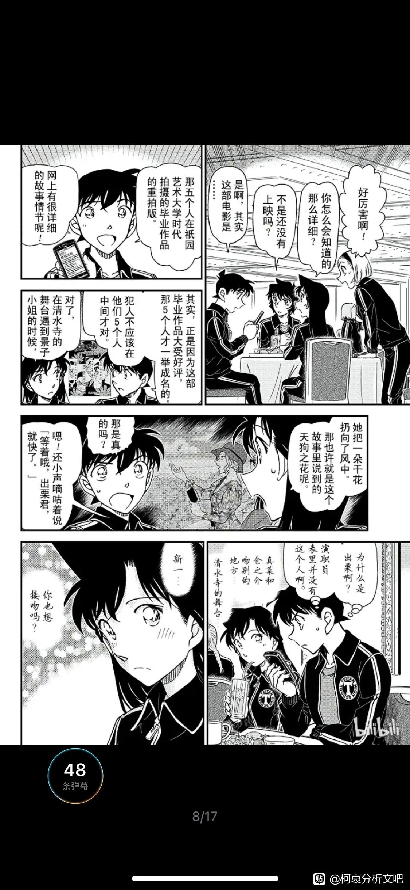
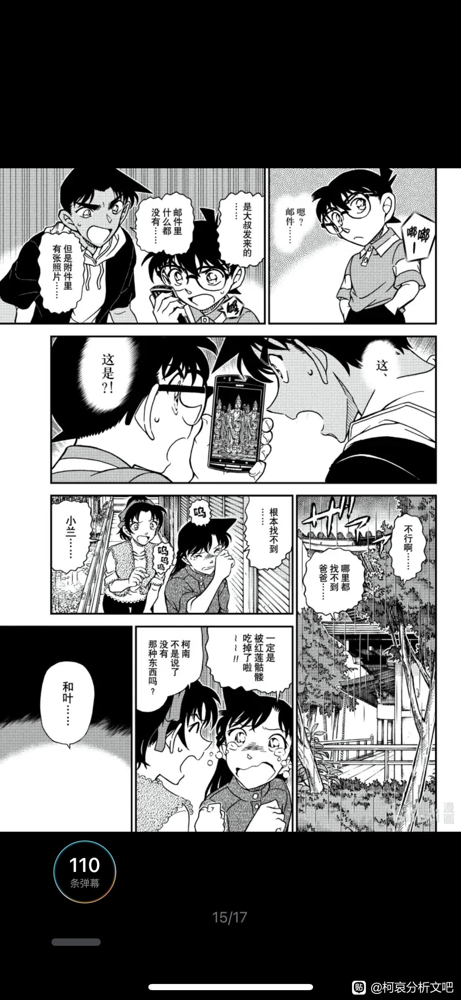
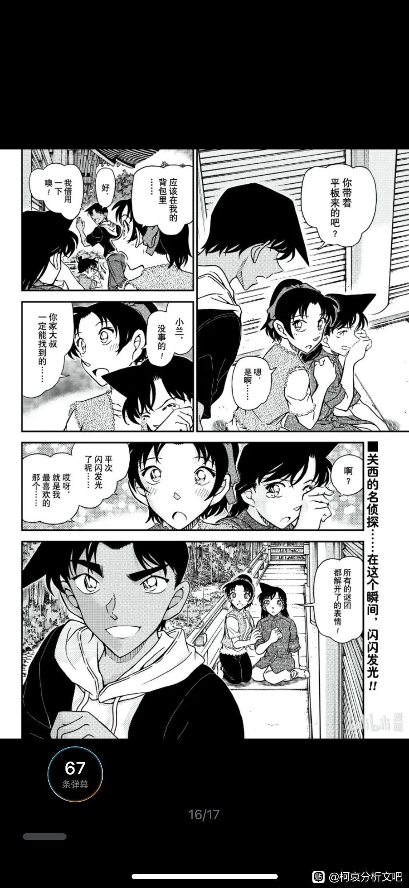

本文在知乎发过一次，如果刷到类似回答，就是本人（ID小核桃）。
本人是个扑街写手，从一个创作者的角度，对哀和兰谁是名柯男主的官配有一些自己的思考，欢迎大家交流讨论～
本人是个扑街写手，从一个创作者的角度，对哀和兰谁是名柯男主的官配有一些自己的思考，欢迎大家交流讨论～
在某个言情文里，我构思了一个女配，和女主抢男主。
我很爱我的男女主，所以这个女配不能太坏，最好还有高光时刻，侧面烘托男主的魅力。
但她也绝对不能动摇女主的地位，而且最后还要和女主和解，自己放下对男主的执念，体现我亲女鹅的魅力。
于是我创作出来的女配是这样的：
她是男主的青梅，比女主更早认识男主，二人关系亲密。
为了不抢女主风头，我又故意给她埋了雷。
比如给她设计一些败好感，会被打脸的行为。
比如她不理解男主，难过的时候不能支持他，安慰他，也提供不了任何帮助。
同时，与并肩作战的男女主形成鲜明对比。
所以，虽然她出场早，但我亲女鹅才是男主的天命之女啊！
人设完成后忽然发现，这个人设怎么好像有点眼熟？
细思极恐：青山是不是也是抱着同样的想法，创造了小兰？
我很爱我的男女主，所以这个女配不能太坏，最好还有高光时刻，侧面烘托男主的魅力。
但她也绝对不能动摇女主的地位，而且最后还要和女主和解，自己放下对男主的执念，体现我亲女鹅的魅力。
于是我创作出来的女配是这样的：
她是男主的青梅，比女主更早认识男主，二人关系亲密。
为了不抢女主风头，我又故意给她埋了雷。
比如给她设计一些败好感，会被打脸的行为。
比如她不理解男主，难过的时候不能支持他，安慰他，也提供不了任何帮助。
同时，与并肩作战的男女主形成鲜明对比。
所以，虽然她出场早，但我亲女鹅才是男主的天命之女啊！
人设完成后忽然发现，这个人设怎么好像有点眼熟？
细思极恐：青山是不是也是抱着同样的想法，创造了小兰？
2023-11-22 22:15 | 贴吧用户_QyPV5PD:你说这些让我想起了路人女主的养成方法里的加藤惠和英梨梨
她是男主的青梅，却不喜欢推理，不了解男主，不知道他身体缩小，也参与不了主线。
而哀呢？独一无二的，“命运共同体”。
她是天才博士，A药的制作者，改写了男主的命运。男主想要解药恢复，也非她不可。
她的作用至关重要，且剧中无人可以替代。
私以为，无论是哀的起名（艾琳），主线参与度，角色塑造用心程度，以及被青山修剪得干干净净的感情线（只剩柯哀），都表明了她才是青山认定的真女主。
眼镜是柯南重要道具。他亲手，2次给小哀戴上，说是给她的护身符，希望能保护她。
小哀也用备用眼镜，在情人节的那一天找到了被困的柯南，救了他的命。
而同样是眼镜，对小兰则是隐藏身份的伪装，他不再是她的竹马工藤新一，而变成了江户川柯南。
青山是个推理漫画家，脑子够聪明，在意细节，懂得回收自己的伏笔。
他也是一个对于自己作品非常强势的人，曾经在漫画中内涵动画制作组，乱改原作。而现在名柯的成功，他得到了话语权。
从M26青山亲自操刀感情线，证明青山是一个能讲好爱情故事的人。
关键只在于，他想不想。
M26中，柯哀那段水下华尔兹，少年如太阳一般耀眼的笑容，配上bgm《如果有你在》，怎能不心动？
回忆一幕幕闪现，他们之间的每个高光都被她，也被作者铭记在心低。
比如把台词分给小哀，“江户川柯南”，“是个侦探”。
他对哀的偏爱，明目张胆。
而哀呢？独一无二的，“命运共同体”。
她是天才博士，A药的制作者，改写了男主的命运。男主想要解药恢复，也非她不可。
她的作用至关重要，且剧中无人可以替代。
私以为，无论是哀的起名（艾琳），主线参与度，角色塑造用心程度，以及被青山修剪得干干净净的感情线（只剩柯哀），都表明了她才是青山认定的真女主。
眼镜是柯南重要道具。他亲手，2次给小哀戴上，说是给她的护身符，希望能保护她。
小哀也用备用眼镜，在情人节的那一天找到了被困的柯南，救了他的命。
而同样是眼镜，对小兰则是隐藏身份的伪装，他不再是她的竹马工藤新一，而变成了江户川柯南。
青山是个推理漫画家，脑子够聪明，在意细节，懂得回收自己的伏笔。
他也是一个对于自己作品非常强势的人，曾经在漫画中内涵动画制作组，乱改原作。而现在名柯的成功，他得到了话语权。
从M26青山亲自操刀感情线，证明青山是一个能讲好爱情故事的人。
关键只在于，他想不想。
M26中，柯哀那段水下华尔兹，少年如太阳一般耀眼的笑容，配上bgm《如果有你在》，怎能不心动？
回忆一幕幕闪现，他们之间的每个高光都被她，也被作者铭记在心低。
比如把台词分给小哀，“江户川柯南”，“是个侦探”。
他对哀的偏爱，明目张胆。
对小兰，则是近乎残忍。
黑衣组织发射鱼雷，小兰站不稳摔倒，警官一个公主抱稳稳地救下了她。
而奔跑过来的柯南，则无力地看了看自己幼儿的身体，眼里是无尽的不甘和悲伤。
现在的他，没有能力保护自己的青梅竹马的女朋友。
他们已经不合适了。
而同时他却不惜暴露身份，想过吃药变大，不惜一切地想要救回另一个女孩！
黑衣组织发射鱼雷，小兰站不稳摔倒，警官一个公主抱稳稳地救下了她。
而奔跑过来的柯南，则无力地看了看自己幼儿的身体，眼里是无尽的不甘和悲伤。
现在的他，没有能力保护自己的青梅竹马的女朋友。
他们已经不合适了。
而同时他却不惜暴露身份，想过吃药变大，不惜一切地想要救回另一个女孩！
不过另一方面，创作者的心意也会随时间改变。
我曾经创作过一个故事，历时5年，男女主人设剧情多多少少有变化。
今年忽然决定让男二上位了。
下了这个决心后，再看之前男女主的互动，以及“胎死腹中”的男女主的女儿，心钝痛，不亚于亲手杀死一个人。
一边心疼着，一边又忙着为新上位的“亲儿子”构思了一些糖和高光，同时给原男主和女主之间埋下了一颗颗雷，掐断他们在一起的可能。
不排除青山前期考虑过新兰结局。
不提剧场版，就原作漫画前期，小兰的塑造是又可爱又飒，武力值爆表，柯南破案过程中出了不少力。
她表面坚强，内心柔软，担心一去不回的新一，会躲在一旁偷偷地哭。
前期每次涉及新兰感情线，总有一股挥之不去的哀伤，二人互相关心，想见却不能见，那种克制压抑的感情，非常打动人心。
可另一方面，他也很早就设计了哀的出场，只是被制作组耽搁了。
而且他采访中也表示，名场面“眼镜超人”也是一开始就构思好了。
哀很有可能自始至终，都是他心中的真女主。
从青山亲自监制的，“真第一集”《变小的名侦探》，也可以侧面证明这一点。
以志保开始，志保结束，明显可以看出青山对她的偏爱和重视。
他是“推理恋爱作家”，小兰的高光，可能只是掩盖真女主的烟幕弹而已。
灰原哀才是柯南的官配。
结局很可能是小兰推理出了柯南=新一，而亲眼见证了柯哀之间的羁绊的她无法接受这一点，从而放弃这段感情。
新兰和平分手，新一和志保在一起，新志结局。
如果青山的对兰的恶意更强一点…
小兰无意中对朗姆泄露了新一没死的事，害新一和灰原陷入险境。
柯南冒着危险救出哀，也明白了自己的心意。
为了安全，新一假死，柯哀结局。
无论怎么结局，柯南和灰原之间，都存在着兰永远无法触及的领域。
这是一个独属于他们之间的浪漫故事。
我曾经创作过一个故事，历时5年，男女主人设剧情多多少少有变化。
今年忽然决定让男二上位了。
下了这个决心后，再看之前男女主的互动，以及“胎死腹中”的男女主的女儿，心钝痛，不亚于亲手杀死一个人。
一边心疼着，一边又忙着为新上位的“亲儿子”构思了一些糖和高光，同时给原男主和女主之间埋下了一颗颗雷，掐断他们在一起的可能。
不排除青山前期考虑过新兰结局。
不提剧场版，就原作漫画前期，小兰的塑造是又可爱又飒，武力值爆表，柯南破案过程中出了不少力。
她表面坚强，内心柔软，担心一去不回的新一，会躲在一旁偷偷地哭。
前期每次涉及新兰感情线，总有一股挥之不去的哀伤，二人互相关心，想见却不能见，那种克制压抑的感情，非常打动人心。
可另一方面，他也很早就设计了哀的出场，只是被制作组耽搁了。
而且他采访中也表示，名场面“眼镜超人”也是一开始就构思好了。
哀很有可能自始至终，都是他心中的真女主。
从青山亲自监制的，“真第一集”《变小的名侦探》，也可以侧面证明这一点。
以志保开始，志保结束，明显可以看出青山对她的偏爱和重视。
他是“推理恋爱作家”，小兰的高光，可能只是掩盖真女主的烟幕弹而已。
灰原哀才是柯南的官配。
结局很可能是小兰推理出了柯南=新一，而亲眼见证了柯哀之间的羁绊的她无法接受这一点，从而放弃这段感情。
新兰和平分手，新一和志保在一起，新志结局。
如果青山的对兰的恶意更强一点…
小兰无意中对朗姆泄露了新一没死的事，害新一和灰原陷入险境。
柯南冒着危险救出哀，也明白了自己的心意。
为了安全，新一假死，柯哀结局。
无论怎么结局，柯南和灰原之间，都存在着兰永远无法触及的领域。
这是一个独属于他们之间的浪漫故事。
2023-10-15 09:14 | 贴吧用户_5e3XaDN:我认为新兰分手不会是兰认出柯南是新一。这样柯南也太小丑了，拼命想要瞒着结果暴露了，还因此分手了。青山不会拿柯南去垫兰的，而且青山认证新一对恋爱一窍不通，新兰分手必须是新一开窍主动分手。2023-10-15 12:41 | 给大佬笔芯😘:回复 贴吧用户_5e3XaDN :确实，让兰推理出柯南的身份并且主动放手，算是给兰的高光、让她体面退场。但青山不一定会牺牲亲儿子，给她体面2023-10-15 13:19 | 贴吧用户_JQeDt32:回复 给大佬笔芯😘 :确实，其实从逻辑上来说，不让兰彻底变小丑，最好的办法就是她像红子一样，自己认输，自己退出这段三角恋，但这样的话，会有种男主新一欠她的感觉，而我觉得，现在的老贼对兰的爱不足以让他用新一的设定来垫兰，所以最后估计还是新一先分手，毕竟是兰干了某件傻事2023-10-15 13:25 | 给大佬笔芯😘:回复 贴吧用户_JQeDt32 :对，可能是叛逆心理，感觉青山对兰的恶意越来越强烈了2023-10-15 13:57 | 贴吧用户_JQeDt32:回复 给大佬笔芯😘 :没错……如果说短篇转长篇的时候老贼想搞擦，当时绝对是想搞新兰和平分手的，因为我现在补漫画补到七百话，明显感觉前两三话左右，毛利兰是以谐星恋爱笑话的方式设定的，也就是除了恋爱的领域，大部分时候小兰都是一个正面角色（小乔其实是真的有点先入为主了）2023-10-15 13:58 | 贴吧用户_JQeDt32:回复 给大佬笔芯😘 :赤木量子事件如果是sr结尾，也就是一笑而过的误会，毕竟量子自己在心虚的情况下，没有明显反感毛利兰的行为，而诙谐语气的翻箱倒柜，在篇幅短的情况下，也会认为是小情q。但到满月前后，小兰的形象就开始明着加恶意，2023-10-15 13:59 | 贴吧用户_JQeDt32:回复 给大佬笔芯😘 :说白了，我们现在觉得毛利兰无语的形象，很大一部分来自于老贼后期故意一点点打碎前期给毛利兰的设定，通过反差来让制造黑点，比如死罗神前一个故事，毛利兰拼命为路人寻找不可能犯罪的理由……前三个故事，毛利兰英姿飒爽，一点看不出同一卷就去求神拜佛的感觉2023-10-15 14:00 | 贴吧用户_JQeDt32:回复 给大佬笔芯😘 :包括我自己看漫画，还看到之前的小兰是会分蛋糕的，虽然对象是小五郎，但另一个方面，我看到现在，双线简直太明显了，两个新兰案子接一个柯哀，虽然说满月之后柯哀没有明显的互动，但相处是一直有点暧昧的（反正和柯步完全不一样）2023-10-15 14:16 | 给大佬笔芯😘:回复 贴吧用户_JQeDt32 :我现在觉得青山在满月篇后雪藏哀，就是怕感情线一下子拉满，失去后续的刻画空间。而这时作品还不能完结，所以只能拖。但柯哀即使被雪藏，也没有埋雷
我记得日本是没有官配这一说法的，大结局还在一起的好像也没有官配的叫法，只有公式cp，公式可以有许多组合，中国官配只有固定的两人
2023-10-15 03:44 | 给大佬笔芯😘:本文中的“官配”定义为男主结局时的伴侣2023-10-15 10:54 | 刺人伤疤结痂:官配这个词好像是从那啥国产甜宠剧出来的，也不是普遍概念 说到底官配这个概念就很搞笑，拆官配就更搞笑，既然被作者亲手拆的，作者说官方，自然它就不算官配。所以终究只是饭圈妹妹的自我yy罢了

中间被吞了，重新发一次
和张力拉满的柯哀线相比，新兰就有些一言难尽。
我写文时，为了突出女主，有意贬低女配，给她安排了一些令人反感的行为等着女主来打脸。
比如让她恋爱脑上头争风吃醋，宣示主权，却被女主一一打脸。
这时我体会到了自己对女配的恶意，一瞬间想到了小兰拉窗帘的名场面。
她为了向世良证明她更了解新一，不惜陷众人于危险中。
这一刻，我同样感受到了青山对角色的恶意。
我写文时，为了突出女主，有意贬低女配，给她安排了一些令人反感的行为等着女主来打脸。
比如让她恋爱脑上头争风吃醋，宣示主权，却被女主一一打脸。
这时我体会到了自己对女配的恶意，一瞬间想到了小兰拉窗帘的名场面。
她为了向世良证明她更了解新一，不惜陷众人于危险中。
这一刻，我同样感受到了青山对角色的恶意。
2023-11-06 08:28 | 顽皮鬼才:窗帘篇，确实很多读者忽视了哀。但小柯可一点不忽视哀，反而是从头到尾在思考哀提出的问题，至于mll和世良真纯，她们说什么小柯一点没搭理。出场次数少、时间短的不一定是配角，主要塑造的明显就是主角呀。mll和世良真纯在柯、哀看来，那是菜鸡互啄，两个配角而已2023-11-22 07:06 | 放风伞敖妙妙♬:是这样，如果是自己的真女主真男主，就算为了真实也不会设计这么多雷点，那些雷点要不就是无伤大雅让人觉得可爱，要不就是提供一个成长空间，但mll就感觉，更像一个陪衬
同理，在伦敦篇，柯南拼命解开暗号救人，小兰却只关注自己的心情，阻碍柯南推理，逼他表白，用掉了回来的解药。
这里她的行为是干扰+拖后腿。
怕读者不理解，青山还特意安排园子点明，“他是被迫的”。
修学旅行篇，青山安排了这样一幕，新一同框，一个满脑子想着推理，另一个却想，“他是不是想接吻？”
这两个人完全不同频，就算结合也是同床异梦。
他刻意创造了一个爱情悲剧，在清水寺亲吻了爱人以后永别。
很难不深思他的意图：这是新兰从此永别的flag。
另外还有一点，柯南为了小兰参加修学旅行，先是忍受药物的痛苦，又面临着身份暴露的风险，可谓困难重重。
此时见小兰这个行为，象征着给男主带来痛苦和生命危险。
拖后腿+带来痛苦，这非常败好感，不是真心实意塑造官配的思路。
这里她的行为是干扰+拖后腿。
怕读者不理解，青山还特意安排园子点明，“他是被迫的”。
修学旅行篇，青山安排了这样一幕，新一同框，一个满脑子想着推理，另一个却想，“他是不是想接吻？”
这两个人完全不同频，就算结合也是同床异梦。
他刻意创造了一个爱情悲剧，在清水寺亲吻了爱人以后永别。
很难不深思他的意图：这是新兰从此永别的flag。
另外还有一点，柯南为了小兰参加修学旅行，先是忍受药物的痛苦，又面临着身份暴露的风险，可谓困难重重。
此时见小兰这个行为，象征着给男主带来痛苦和生命危险。
拖后腿+带来痛苦，这非常败好感，不是真心实意塑造官配的思路。
2023-10-15 09:16 | 贴吧用户_5e3XaDN:毕竟兰只是一个爱拖后腿的茶茶。修学旅行篇血天井也暗示了这一点
其实73很可能转长篇后就决定了是柯哀结局，明美和志保聊天提到新一，还说希望志保找到男朋友，还有再会篇琴酒说哀和新一是一对，从创作手法来看，这些都是暗示柯哀结局的。
2023-10-15 03:57 | 给大佬笔芯😘:对，而且漫画早期，明美死的时候，就出现了志保的剪影2023-10-15 04:02 | 世界上没有真理:對!這邊超明顯，無奈路人們竟然看不懂，還有元太把新蘭分開那一幕，真第一集暗示太多，但奇怪的是新蘭粉都說很甜2023-10-15 04:04 | 随意♬飘荡:回复 给大佬笔芯😘 :明美和琴酒这些重要角色的暗示是非常重要的，除非73想让他们被打脸成小丑。特别是明美，生前愿望就是哀找到男朋友，而且73还把哀→柯箭头直接设定成"我的眼里只有你”，从创作逻辑来看，就只有柯哀结局的可能性了，当然了，也不能排除73发癫吧2023-10-15 04:21 | 随意♬飘荡:回复 世界上没有真理 :能看出柯哀暗线的人应该不少，但是相信73的人就没多少了。m26出现前，估计也没多少人相信73是有计划搞党争，都是觉得73把哀当成伪后宫擦边球的工具，就像红叶红子步美和世良一样。2023-10-15 04:24 | 世界上没有真理:回复 随意♬飘荡 :我在隔壁有看過說結局如果是柯哀那就是青山發癲，保持新蘭就是神作不忘初心#(汗)2023-10-15 04:26 | 随意♬飘荡:回复 世界上没有真理 :都嗑新兰了，习惯就行。2023-10-15 04:30 | 世界上没有真理:回复 随意♬飘荡 :對!大部分的人都覺得哀就是女配頂多拿來當擦邊球最後還是新蘭，但仔細觀察哀跟上述這幾位還是差非常多，即使m26出來路人依舊認為最後是新蘭，大概是覺得青山不可能寫分手劇情2023-10-15 04:49 | 别XB乱叫☜:回复 世界上没有真理 :青山知道路人觉得不会有分手剧情，所以他很可能最后来个反转，青山一向喜欢震惊所有人2023-10-15 04:53 | 给大佬笔芯😘:回复 随意♬飘荡 :对，m26出来前我也不敢相信2023-10-15 04:54 | 给大佬笔芯😘:回复 别XB乱叫☜ :最后搞波大的，才算成就“推理恋爱漫画家”2023-10-15 06:41 | 江风一孤同:回复 世界上没有真理 :他们是懂双标的，哪怕是唐红的恋歌青山都埋了一堆雷，只能说确实书读得不到位


思想不同频

与之对应的是，灰原提前预判了柯南，伦敦篇拜托有希子送解药，“因为他肯定会提前吃药”，解决了柯南的燃眉之急。
她了解他，解决了他的困难，而且这件事给她不能完成。
名柯这部作品是大男主，以青山对男主的偏爱，再对比两位女生的待遇，到底哪个是真女主，一目了然。
她了解他，解决了他的困难，而且这件事给她不能完成。
名柯这部作品是大男主，以青山对男主的偏爱，再对比两位女生的待遇，到底哪个是真女主，一目了然。
2023-10-15 06:53 | 贴吧用户_QC7XaCG:青山：谁是宁宁？谁是茶茶？喜欢茶茶的朋友们对不起啦啦，我家祖先站宁宁这边~
我本来一开始觉得以后可能新兰柯哀开放式结局，但是后来看了分析文们这些伏笔，我觉得结局就是柯哀了。
无他，兰被鬼吓哭了的时候小柯直接跟着服部跑了，我站在一个创作者的角度，如果是我笔下的CP，我是怎么也不可能让我的女主哭了的时候男主无动于衷的。
对比之下，小哀好像只有前期哭过，除了M26就再也没有。（柯：让我的嗨巴拉哭了你们都去死吧——）
作为一个柯南超人，如果他不想让他的女孩哭，他总是有办法的。只是他的心思花在哪里？
柯导关注的：嗨巴拉没那么坚强，我得瞒着她别让她担心。嗨巴拉不敢去森林，那我们去海边吧。嗨巴拉掉了挂坠，我千辛万苦去捡回来。
而对于另外一个人。
嗨巴拉：她比你想的坚强……
柯：空手道吗？
……
同人文我都不敢这么想啊！
无他，兰被鬼吓哭了的时候小柯直接跟着服部跑了，我站在一个创作者的角度，如果是我笔下的CP，我是怎么也不可能让我的女主哭了的时候男主无动于衷的。
对比之下，小哀好像只有前期哭过，除了M26就再也没有。（柯：让我的嗨巴拉哭了你们都去死吧——）
作为一个柯南超人，如果他不想让他的女孩哭，他总是有办法的。只是他的心思花在哪里？
柯导关注的：嗨巴拉没那么坚强，我得瞒着她别让她担心。嗨巴拉不敢去森林，那我们去海边吧。嗨巴拉掉了挂坠，我千辛万苦去捡回来。
而对于另外一个人。
嗨巴拉：她比你想的坚强……
柯：空手道吗？
……
同人文我都不敢这么想啊！
2023-10-15 04:57 | 给大佬笔芯😘:对啊！我的女主如果哭了，男主无动于衷，那他就不配当男主。看看小哀出事柯南又是如何做的，对比明显2023-10-15 05:00 | 世界上没有真理:倫敦篇就沒在理毛利蘭了，要不是毛利蘭手握破案線索，工藤新一早就跑了，就為了安撫毛利蘭只能告白，是我看過最爛告白的戀愛番沒有之一，一點都不感動，就這樣新蘭粉還說很甜......2023-10-15 06:46 | 江风一孤同:回复 世界上没有真理 :毛利兰大晚上追了柯南半个小时，柯南还是腿上有伤。我看伦敦篇的时候就很不舒服，人命关天正是焦急的时候毛利兰来这一手真的让人想给她两个耳刮子清醒一下，半个城的人命就指望这线索来救你还在这跟我叽叽歪歪感情问题2023-10-15 06:53 | 世界上没有真理:说甜的，怕不是天天想着能有个无条件服从的舔狗跟在后面
回复 江风一孤同 :對啊！有點邏輯都知道一個作者怎麼會這樣安排自己的女主角做出這樣不討喜的舉動？除非這女主角就是一個煙霧彈，對比“女配”給藥讓你柯圓夢，還能神機妙算的算出你柯無法回來趕快讓工藤夫婦過去送藥，這對比不能再明顯了吧2023-10-15 07:39 | 江风一孤同:回复 世界上没有真理 :可惜sr阅读理解做不来，只会磕工业糖精，然后把智商一起吞下去了2023-10-15 10:36 | 熙熙兔:回复 江风一孤同 :她们代入太深了……

从写平和这对就能看出来青山知道让人喜欢的青梅竹马的爱情该怎么写，平次宁愿手被划伤也不放开和叶的手，和叶为了平次能活下去宁愿自己掉下山崖，和叶喜欢看平次破案时闪闪发光的样子。如果真想xl结局，完全可以这么写，开头写兰不理解新一的梦想，新一离开后，在以柯南的身份与兰相处破案的过程中，兰渐渐明白了新一为什么喜欢推理，开始逐渐理解推理，并学会自己去不依靠新一解决问题，并在与柯南相处中意识到柯南与新一相似之处，渐渐喜欢上柯南，结果结局时发现柯和新是一个人，兰会心一笑说原来你一直都在我身边保护我，然后达成xl结局。但青山完全没往这个方向写，漫画里兰不仅没成长还一直拖后腿，一直都贬低新一的梦想，哪个作者会让自己笔下的男主跟这种女生在一起呢，最重要的是兰宁愿相信柯南是十分聪明的成熟的一年级小学生，也不愿像危命篇相信柯南是新一，这完完全全就是个大雷了，我是不信兰知道柯是新后能原谅他的欺骗，无视新志间的互动跟新在一起
2023-10-15 06:35 | 科学魔法少女º:还有快青，真要塑造欢喜冤家也应该是快青这样，快斗“犯贱”，青子才会生气。魔快和名柯的开头就差别挺大的，名柯开头读者视角就是新一莫名其妙被小兰打来；而魔快是斗子先去捉弄青子，而且在上课边斗嘴边答题也变现双方实力相当。青山一开始就没有像青快一样塑造新兰。2023-10-15 08:15 | 我是喜欢你么a:这半年时间里兰能清楚看到柯南和灰原哀的互动和对其的照顾，她自己也许都不敢去想柯南就是新一
从创作者的角度观察，其实和明显看得出江户川柯南和灰原哀刻意设计的【命运感】。
他们同样变小，分别为被卷入的受害者和药物开发者，一起在雨夜被阿笠博士捡到，明美临走前要志保【制作一个男朋友】，明美死之前最后见到的也是今后能代替她让灰原哀依靠的柯南……复盘来看是一眼看得出来的经典设计。
那么在设计了这种层面的柯哀对照，那反过来想，怎么保证新兰结局呢？
两种方案，第一种，柯哀之间没有箭头，新兰有独立箭头，哀没有或者也有独立CP，换句话来说，就是【战友情】，这种情况就是经典的结局各找各妈——但我们看到，柯哀感情线不仅有，而且是青山设计由有希子亲自直白揭破，不存在任何回旋余地。
第二种，名柯是走悲剧向，因为刻意设计了柯哀的对照，使这种命运般的对应落空，这种走向就是经典的错过，也就是以前的经典柯哀be美学。这种走新兰结局，要名柯整体是悲伤走向（毕竟哀早期各种旗大伙都觉得活着就是胜利），最好就是以满月作为结局，那里的氛围塑造懂得都懂，柯哀感情升华到顶点然后泡沫般消散，毛利兰那一扑也是很适合作为【放手】标志的存在——然后名柯连载至今，氛围早已不同，走喜剧风，灰原哀的成长就是明显的【从哀走向爱，从一无所有走向幸福】，换句话来说，柯哀作为命运的对应，喜剧结局必然圆满，如今亲情友情都兼具的情况下，你让她爱情有缺憾？
他们同样变小，分别为被卷入的受害者和药物开发者，一起在雨夜被阿笠博士捡到，明美临走前要志保【制作一个男朋友】，明美死之前最后见到的也是今后能代替她让灰原哀依靠的柯南……复盘来看是一眼看得出来的经典设计。
那么在设计了这种层面的柯哀对照，那反过来想，怎么保证新兰结局呢？
两种方案，第一种，柯哀之间没有箭头，新兰有独立箭头，哀没有或者也有独立CP，换句话来说，就是【战友情】，这种情况就是经典的结局各找各妈——但我们看到，柯哀感情线不仅有，而且是青山设计由有希子亲自直白揭破，不存在任何回旋余地。
第二种，名柯是走悲剧向，因为刻意设计了柯哀的对照，使这种命运般的对应落空，这种走向就是经典的错过，也就是以前的经典柯哀be美学。这种走新兰结局，要名柯整体是悲伤走向（毕竟哀早期各种旗大伙都觉得活着就是胜利），最好就是以满月作为结局，那里的氛围塑造懂得都懂，柯哀感情升华到顶点然后泡沫般消散，毛利兰那一扑也是很适合作为【放手】标志的存在——然后名柯连载至今，氛围早已不同，走喜剧风，灰原哀的成长就是明显的【从哀走向爱，从一无所有走向幸福】，换句话来说，柯哀作为命运的对应，喜剧结局必然圆满，如今亲情友情都兼具的情况下，你让她爱情有缺憾？
2023-10-15 06:48 | 世界上没有真理:從死羅神那邊就能看出不一樣，安排哀過來救場，接著倫敦篇又是哀來救場，奇怪怎麼新蘭感情線都有你哀的身影?我就是從這邊感覺怪怪的，但當時卻說不出個所以然，直到看了分析文才能知道青山的布局2023-10-15 06:54 | 一个路人路过♬:回复 世界上没有真理 :【新兰感情戏然后毛利兰惹祸，灰原哀救场】，这种设计也很刻意2023-10-15 06:56 | 一个路人路过♬:回复 世界上没有真理 :对了朋友，想问你们那边的柯哀圈子里有分析文吗，是和我们这边流通的吗2023-10-15 07:03 | 世界上没有真理:回复 一个路人路过♬ :很刻意，但是看出來的人不多，好奇之後青山會不會再寫明一點？柯哀有命運感但是青山在描寫你柯內心時留白過多，畫新蘭時你柯心理活動一大堆，這就給人一種工藤新一愛的是毛利蘭對哀沒感覺，不過還是那句話不要看他說了什麼要看他做了什麼？2023-10-15 07:04 | 世界上没有真理:回复 一个路人路过♬ :完全沒有........大部分都認為是新蘭結局，這次有m26出後有柯哀黨想分析還會被打壓，沒有文吧這樣的柯哀論壇2023-10-15 07:28 | 别XB乱叫☜:回复 世界上没有真理 :不要看他说了什么，而是看他做了什么。这句话就很有意思了，因为这句话放漫画里就能得出一个结论：柯对哀的爱比对兰的喜欢要深。感觉青山有意隐藏这一点，所以画xl时写大量柯的内心戏，造成类似烟雾弹的效果，画柯哀时最多加些微表情2023-10-15 14:17 | 给大佬笔芯😘:回复 世界上没有真理 :那边的sr党也如此强势嘛2023-11-06 08:32 | 顽皮鬼才:回复 世界上没有真理 :2023-11-06 08:34 | 顽皮鬼才:回复 世界上没有真理 :照一样的剧情继续整下去，迟早有一天哀完全救不过来。救不过来的时候，xl也就可以炸裂了。

纠正一下，红修篇壳子想变大只是想以工藤新一的身份参加修学旅行，对日本高中生来说很重要，并不是为了小兰 帮哀酱拿回比护玩偶之后其实壳子内心已经在考虑不去修学旅行了（考虑的是身份暴露问题）
帮哀酱拿回比护玩偶之后其实壳子内心已经在考虑不去修学旅行了（考虑的是身份暴露问题）
根据分析大佬们的归纳总结其实只有危命篇是第一次也是最后一次壳子有为了小兰而变大的想法，后续死罗神和伦敦还有红修其实都不是壳子主观为了小兰而去变大的
而且红修结尾的sr接吻未遂处，新一的心理描写是“这个心跳……不知道是因为要接吻了还是因为药效……”“……果然是因为药效吗”，在这里我感觉青山已经在暗示新一对兰已经没有什么感情了，将接吻这种场面下的生理反应归纳给外界的物理干扰（药）基本可以宣布死亡了
帮哀酱拿回比护玩偶之后其实壳子内心已经在考虑不去修学旅行了（考虑的是身份暴露问题）根据分析大佬们的归纳总结其实只有危命篇是第一次也是最后一次壳子有为了小兰而变大的想法，后续死罗神和伦敦还有红修其实都不是壳子主观为了小兰而去变大的
而且红修结尾的sr接吻未遂处，新一的心理描写是“这个心跳……不知道是因为要接吻了还是因为药效……”“……果然是因为药效吗”，在这里我感觉青山已经在暗示新一对兰已经没有什么感情了，将接吻这种场面下的生理反应归纳给外界的物理干扰（药）基本可以宣布死亡了
2023-10-15 06:55 | 别XB乱叫☜:个人感觉接吻未遂那里，因为要接吻指xl，药效到了暗喻柯哀，恐怖的地方就在这里没模糊处理，而是让新一直白来一句果然是因为药效2023-10-15 07:05 | 红茶3h:回复 别XB乱叫☜ :如果那里新一说的和危命一样是“可恶，怎么偏偏这种时候”的话那还算一个偏sr的模糊，但是除了心理描写还有一点很微妙的就是新一明明还有一颗药但是他没吃。不管是为了遵守小哀说的吃药频率还是其他什么原因都已经锤死新一已经不会为了小兰吃药了（而这颗药壳子会在什么时候吃已经在m22023-10-15 07:05 | 红茶3h:回复 别XB乱叫☜ :已经在m26回收了2023-10-15 07:11 | 别XB乱叫☜:回复 红茶3h :没吃的药在未来有4种情况： 1.新哀 2.新志 3.xl分手 4.继续画xl，给xl埋雷（可能性最小，毕竟新一这个身份在现在的情况下挺危险）2023-10-15 07:18 | 红茶3h:回复 别XB乱叫☜ :埋雷很简单，变大和兰出去完然后回头兰在寿司店和园子吐槽新一被朗姆听到2023-10-15 12:06 | 给大佬笔芯😘:确实，新一去修学旅行并不完全是为了兰，但新一去修学旅行变大，总归是绕不过和兰相处，问告白的回应，发展感情线的（无论正面还是负面）。这里我想表达的意思是，修学旅行中，新兰线涉及变身的痛苦和身份暴露的危险，而柯哀线小哀是新一得以去参加修学旅行，高中生活不留遗憾的最大功臣。哪个角色对新2023-10-15 12:31 | 给大佬笔芯😘:另外从嗑药变大方面，兰确实对新一而言越来越无关紧要兰。危命复活篇为了见兰主动服药，变回去极为不甘心。死罗神篇误吃药，被灰原救场，渐渐没了“没能表白的不甘心”。直到伦敦篇吃药完全是为了出去玩，如果不是兰逼迫，根本没有表白的想法。然后M26直接王炸，为了救哀，柯南想过直接服药变大。柯2023-10-16 00:22 | 贴吧用户_5726KyK:回复 红茶3h :这不是埋雷了，让郎姆知道是爆雷

现实总是有各种各样的因素，作者的感情变化、漫画的销量变化、读者的反馈、编辑的要求、剧场版的需求、年龄的变化……
如果不考虑那么复杂，将现实像简短的人物故事一样简化概括的话：
“作者想画男女主从零开始、相互拉扯，击溃反派的王道剧情。
女配R作为男主C的青梅为C提供前期掩护，女主A被安排用姊亡剧情做铺垫，天降和C建立羁绊。
动画组急需一个女主，于是动画加戏、电影给大女主戏份推R为女主，A出场延后且出场后被删改戏份——A成为动画里的女配。
作者憋了二十多年终于开始搞事情，于是有了M26。”
虽然像童话一样简单（漫画家与灰姑娘的故事（父女）），但逻辑很完整，说得通，存在即合理，不是吗~
不得不说，动画组发的滤镜太强——我当初就是跟着动画一路“甜”过来的。小黑鱼出来后传言“柯哀亲了”让我觉得很懵逼，直到8月份才因为“新志初遇论”和看过的某部柯学同人的剧情很像，因为好奇一路追查到柯哀分析文吧……
黑豆or红豆，我选红豆~
如果不考虑那么复杂，将现实像简短的人物故事一样简化概括的话：
“作者想画男女主从零开始、相互拉扯，击溃反派的王道剧情。
女配R作为男主C的青梅为C提供前期掩护，女主A被安排用姊亡剧情做铺垫，天降和C建立羁绊。
动画组急需一个女主，于是动画加戏、电影给大女主戏份推R为女主，A出场延后且出场后被删改戏份——A成为动画里的女配。
作者憋了二十多年终于开始搞事情，于是有了M26。”
虽然像童话一样简单（漫画家与灰姑娘的故事（父女）），但逻辑很完整，说得通，存在即合理，不是吗~
不得不说，动画组发的滤镜太强——我当初就是跟着动画一路“甜”过来的。小黑鱼出来后传言“柯哀亲了”让我觉得很懵逼，直到8月份才因为“新志初遇论”和看过的某部柯学同人的剧情很像，因为好奇一路追查到柯哀分析文吧……
黑豆or红豆，我选红豆~
是的是的，非常同意LZ的话(=^^=)
要单说恋爱这一条线，我觉得ca是比肩春场老师的五等分里的四叶线，一往情深，在背后支撑着对方，却有自己的原因不愿意对方知道这份感情，是非常苦涩隐晦却又极其动人诚挚的爱情
大概漫画连载这种人气一旦低落立马就腰斩的形式，就是会让作者无法完全表达自己想表达的内容，据说春场老师在稳稳完结前也设计了许多不同的结局迎合不同腰斩时点，幸好五等分的人气足够写到真女主四叶的获胜
近来重看漫画，真的有感觉，以灰原哀出场的前一话著名的“初恋褪色”麻美学姐案为起点，剧情推进就像登上火箭一样开始加速，灰原登场后紧接着【½顶点】头一次向读者宣战，然后各位配角才陆续登台开启了名柯宇宙
18卷哀登场之后是19卷的和叶，给平次这位“哀替”配平，21卷的佐藤白鸟，自此警视厅恋爱物语开幕，22卷京极真，为园子开辟感情线，而黑组这条最关键的主线也随着哀的登场再次回归（龙舌兰出场早就是倒霉 没两句台词直接被犯人💥最没存在感的酒……）
没两句台词直接被犯人💥最没存在感的酒……）
所以我非常同意楼内一些8u所言，名柯如果是短篇或者18卷以前就人气太差腰斩了，那肯定就以不需要什么笔墨的sr，直接两情相悦大团圆完结了
但是，既然命运的齿轮让名柯宇宙发展到今天这个地步，连载20余年甚至未来可能还有不止20年，有这么大的发挥空间，真正的创作者怎么会不去选择让他喜欢的那种爱情，真女主还怎么输
就像当年有人分析四叶会赢一样
新一可以有无数种理由选择兰，但是没有任何理由不和哀携手前进
要单说恋爱这一条线，我觉得ca是比肩春场老师的五等分里的四叶线，一往情深，在背后支撑着对方，却有自己的原因不愿意对方知道这份感情，是非常苦涩隐晦却又极其动人诚挚的爱情
大概漫画连载这种人气一旦低落立马就腰斩的形式，就是会让作者无法完全表达自己想表达的内容，据说春场老师在稳稳完结前也设计了许多不同的结局迎合不同腰斩时点，幸好五等分的人气足够写到真女主四叶的获胜
近来重看漫画，真的有感觉，以灰原哀出场的前一话著名的“初恋褪色”麻美学姐案为起点，剧情推进就像登上火箭一样开始加速，灰原登场后紧接着【½顶点】头一次向读者宣战，然后各位配角才陆续登台开启了名柯宇宙
18卷哀登场之后是19卷的和叶，给平次这位“哀替”配平，21卷的佐藤白鸟，自此警视厅恋爱物语开幕，22卷京极真，为园子开辟感情线，而黑组这条最关键的主线也随着哀的登场再次回归（龙舌兰出场早就是倒霉
没两句台词直接被犯人💥最没存在感的酒……）所以我非常同意楼内一些8u所言，名柯如果是短篇或者18卷以前就人气太差腰斩了，那肯定就以不需要什么笔墨的sr，直接两情相悦大团圆完结了
但是，既然命运的齿轮让名柯宇宙发展到今天这个地步，连载20余年甚至未来可能还有不止20年，有这么大的发挥空间，真正的创作者怎么会不去选择让他喜欢的那种爱情，真女主还怎么输
就像当年有人分析四叶会赢一样
新一可以有无数种理由选择兰，但是没有任何理由不和哀携手前进
最开始看柯南看的漫画，也真情实感的磕过sr 前期小兰对柯南身份的猜测拉扯我觉得真的很有感觉，特别是路灯下对柯南询问的那一幕。直到现在都印象深刻，然后但是看漫画看到死罗神篇章的时候，当时感觉就有点怪怪和微妙。后面越看越给我一种，小兰和主要剧情线格格不入的感觉。而且塑造也真的越来越不讨人喜欢，很难想象就这样he的结局
前期小兰对柯南身份的猜测拉扯我觉得真的很有感觉，特别是路灯下对柯南询问的那一幕。直到现在都印象深刻，然后但是看漫画看到死罗神篇章的时候，当时感觉就有点怪怪和微妙。后面越看越给我一种，小兰和主要剧情线格格不入的感觉。而且塑造也真的越来越不讨人喜欢，很难想象就这样he的结局
前期小兰对柯南身份的猜测拉扯我觉得真的很有感觉，特别是路灯下对柯南询问的那一幕。直到现在都印象深刻，然后但是看漫画看到死罗神篇章的时候，当时感觉就有点怪怪和微妙。后面越看越给我一种，小兰和主要剧情线格格不入的感觉。而且塑造也真的越来越不讨人喜欢，很难想象就这样he的结局而且还有一点，我认为创作者会不自觉给女主抬身价，比如说给她看似凄凌的身世突然说她父母不是亲生的，她的亲生父母是皇帝皇后，或者王爷家的，宰相家的，某个大富豪家的……或者是某个仙人的转世，反正有个不凡的来历。我觉得赤楼梦就是在给灰原在这方面加重量，本来孤苦无依的哀现在有了实力雄厚的娘家，有希子也特别喜欢小哀，这都是女主设置……
（鸣人：哦，所以我是四代的孩子也是为了和宇智波名门相配？更何况我和佐助还是转世兄弟三生三世鼬还特别认可我——岸本这个写法我也是醉了岸本老师您怎么想的啊啊啊啊啊——）
（鸣人：哦，所以我是四代的孩子也是为了和宇智波名门相配？更何况我和佐助还是转世兄弟三生三世鼬还特别认可我——岸本这个写法我也是醉了岸本老师您怎么想的啊啊啊啊啊——）
2023-10-24 02:38 | 果味橡皮糖🍒:笑死，还真是。对我来说，这两对都是仙品
感谢大家的讨论和支持，每一条评论我都看了，也很赞同大家提出的一些观点。
首先作者的意志确实会被压制，所以前期哀的出场一直被延后，青山最后不得不“非暴力不合作”，威胁停更，哀才终于出场了。
以青山小心眼的个性，给他机会一定会反击。
M26可视为他的反击和摊牌，“我不装了，要给亲女儿讨回应有的地位！”。
细数M26的柯哀糖，眼镜护身符，考虑服药变大救哀，绝美的海底烟花，睡下恋爱喜剧，《如果有你在》变奏，双鲨鱼梗回收，“江户川柯南”“是个侦探”。
这么多好牌，无论哪一条单出，都会让ca党兴奋半天。
可他，竟然毫不吝啬地一起出了！
像不像斗地主里，胜券在握，所以直接明牌了？
首先作者的意志确实会被压制，所以前期哀的出场一直被延后，青山最后不得不“非暴力不合作”，威胁停更，哀才终于出场了。
以青山小心眼的个性，给他机会一定会反击。
M26可视为他的反击和摊牌，“我不装了，要给亲女儿讨回应有的地位！”。
细数M26的柯哀糖，眼镜护身符，考虑服药变大救哀，绝美的海底烟花，睡下恋爱喜剧，《如果有你在》变奏，双鲨鱼梗回收，“江户川柯南”“是个侦探”。
这么多好牌，无论哪一条单出，都会让ca党兴奋半天。
可他，竟然毫不吝啬地一起出了！
像不像斗地主里，胜券在握，所以直接明牌了？
2023-10-15 23:39 | 熙熙兔:我觉得！青山老师这么一手，之后肯定还有名场面！超期待！我们以为四个豹子已经是绝绝子了，他手里估计还藏着双王呢2023-10-16 00:24 | 贴吧用户_5726KyK:柯哀牌反正多着呢，对面反正没牌可以打了2023-11-06 08:36 | 顽皮鬼才:什么女儿？明明就是无所不能的亲妈，凡是哀下的结论都是对的。
另外我非常赞同@熙熙兔的观点。
作为创作者，我也会“抬自己的女主一手”， 给她设计一个牛逼的身世，而不是设计“拉窗帘”这种争议举动。
比如揭秘小五郎只是兰的养父，其实她是某大佬的女儿（例如红叶是首相的孙女），可以给柯南提供巨大帮助，顺势加入主线。
这样也解释了为何毛妃夫妻最为父母不称职的地方。
比如一个抛弃年幼的女儿给不靠谱的父亲，另一个让女儿洗衣做饭照顾他。
比如人到中年了，明明相互喜欢还故意赌气，就是不复合，这种孩子气的行为，一点都不像有担当的成年人。
那只有一种可能，他们并不是小兰的亲生父母，出于某种原因收养了兰。
他们本身还是个孩子，所以心智不成熟，也照顾不好另一个孩子。
作为创作者，我也会“抬自己的女主一手”， 给她设计一个牛逼的身世，而不是设计“拉窗帘”这种争议举动。
比如揭秘小五郎只是兰的养父，其实她是某大佬的女儿（例如红叶是首相的孙女），可以给柯南提供巨大帮助，顺势加入主线。
这样也解释了为何毛妃夫妻最为父母不称职的地方。
比如一个抛弃年幼的女儿给不靠谱的父亲，另一个让女儿洗衣做饭照顾他。
比如人到中年了，明明相互喜欢还故意赌气，就是不复合，这种孩子气的行为，一点都不像有担当的成年人。
那只有一种可能，他们并不是小兰的亲生父母，出于某种原因收养了兰。
他们本身还是个孩子，所以心智不成熟，也照顾不好另一个孩子。
2023-10-15 13:26 | 贴吧用户_JQeDt32:其实不必是养父，毛妃的父母都没有身份出现啊，如果想抬身份，完全可以说他们某一方是不联姻离开家族的，其实也是大家族的孩子，所以小兰也是名流出身2023-10-15 14:18 | 给大佬笔芯😘:回复 贴吧用户_JQeDt32 :主要是觉得小兰的父母太不靠谱了，非常孩子气。对比新一家，其实青山也会刻画关心孩子的父母2023-10-15 23:44 | 熙熙兔:其实毛利兰身世想抬一手非常容易，改一下小五郎人设就行，比如说他的真傻都是一种卧底行为，结果他发现新一就是柯南之后，改变了卧底策略，整体在下大棋……妃英理也是配合小五郎分居这样可以帮小五郎私下做一些他明面上本人不能去做的事情，这样忍辱负重两夫妻也非常非常的吸粉2023-10-15 23:46 | 熙熙兔:我很喜欢毛利大叔的高光时刻的，甚至M26我都希望他比兰争气一点……但是青山老师现在就是故意把他乐子人，就很说明问题了2023-10-15 23:49 | 熙熙兔:原作里我认为给兰抬形象的是贝姐对她的“angel”，这样“贝姐为了她给红方优待”也是女主抬身份的一种方式，但是原作贝姐对她和新一两个人都有亲妈行为，甚至M26帮了小哀，这个“干妈”也生锈了，哀被抬了一手2023-10-16 01:05 | 给大佬笔芯😘:回复 熙熙兔 :青山不仅不想抬兰，还在持续踩她。1018话里，和叶都不怕鬼了，兰却依然怕鬼，柯无视她的眼泪，而且制服犯人这种高光时刻都给了小五郎。
另一方面，我非常爱我的男女主，设计他们互动时，有意避开“拖后腿”，这种争议行为。
反而会刻画，二人如何并肩作战，相互扶持，在对方最需要的时候及时出现，只有他/她才是相互的唯一救赎。
我也会安排他们和配角的友好互动，但有些地方我会刻意安排为，“只有他/她可以做到”，排他性非常很强，以此奠定主角的地位。
反而会刻画，二人如何并肩作战，相互扶持，在对方最需要的时候及时出现，只有他/她才是相互的唯一救赎。
我也会安排他们和配角的友好互动，但有些地方我会刻意安排为，“只有他/她可以做到”，排他性非常很强，以此奠定主角的地位。
2023-10-15 23:54 | 熙熙兔:其实可以有点BUG的，但是这种BUG必然要伴随情感高光，比如说满月小哀直接出现去换小柯的命，其实有点儿难说，但是我们读者都能感受到她为了他急坏了他对她有多么重要，反观伦敦篇——好了，我知道案子对于新一多重要了，可以让他的青梅竹马泪洒伦敦街头2023-10-16 01:07 | 给大佬笔芯😘:1017话也是如此，小兰哭着说爸爸被红莲骷髅吃了，柯南连句话都懒得说直接破案去了
再看漫画1117话，小兰大哭，“爸爸被红莲骷髅吃掉了”，成为了另一个“名场面”。
“怕鬼”一直都是小兰和和叶的一个特点，我怀疑青山是不是想借此体现女高的呆萌可爱，只是网友不买账而已。
可细看和叶和兰的互动，我否认了这一点。
上一话和叶和兰听见鬼故事，吓得抱成一团，可柯南立马否认了这一点，并向二人解释说“根本没有鬼”。
然后下一话，小兰哭着说，“爸爸被红莲骷髅吃掉了！”
而和叶，则一脸无奈地说：“根本没有那种东西啦！”
对比惨烈。
如果我是作者，我想体现女主怕鬼—可爱这一特质，那我会变低女配，从而抬高女主的地位。
比如，和叶战战兢兢地说：
“叔叔不会已经被红莲骷髅吃掉了吧？”
女主虽然将信将疑，却坚持说：“应该不会吧，柯南说过没有鬼耶！”
这样来描绘一个坚强又柔弱的女主，而且加深了男女主的羁绊，体现了女对男主的信任，以及男主对女主造成的积极影响（不再怕鬼）。
再不济，也是女主和女配抱在一起，一起尖叫怕鬼。
可现实是，女配和叶认同了柯南的解释“没有鬼”，而“女主”一个原地踏步，一点进步都没有。
“怕鬼”一直都是小兰和和叶的一个特点，我怀疑青山是不是想借此体现女高的呆萌可爱，只是网友不买账而已。
可细看和叶和兰的互动，我否认了这一点。
上一话和叶和兰听见鬼故事，吓得抱成一团，可柯南立马否认了这一点，并向二人解释说“根本没有鬼”。
然后下一话，小兰哭着说，“爸爸被红莲骷髅吃掉了！”
而和叶，则一脸无奈地说：“根本没有那种东西啦！”
对比惨烈。
如果我是作者，我想体现女主怕鬼—可爱这一特质，那我会变低女配，从而抬高女主的地位。
比如，和叶战战兢兢地说：
“叔叔不会已经被红莲骷髅吃掉了吧？”
女主虽然将信将疑，却坚持说：“应该不会吧，柯南说过没有鬼耶！”
这样来描绘一个坚强又柔弱的女主，而且加深了男女主的羁绊，体现了女对男主的信任，以及男主对女主造成的积极影响（不再怕鬼）。
再不济，也是女主和女配抱在一起，一起尖叫怕鬼。
可现实是，女配和叶认同了柯南的解释“没有鬼”，而“女主”一个原地踏步，一点进步都没有。
我也是一个很糊很糊的小说作者，但我是女宝妈，我的男主一般都是给女主做后宫正宫的。
但不管怎么说，我之前设计过一个暗恋男主的女配（因为男女主明面上没关系，所以女配的出现其实是为了挑明感情线的。）
我是怎么设计的呢？首先，遇到危险的场景（无限流）我的男女主是并肩战斗的，不会像某个人一样呆在安全屋坚决不走，待在安全屋的是谁呢？是女配，被父亲好好的保护，看着爱慕的男主和女主并肩作战。
之后，女配去找男主，误入白学现场，就是类似真人版的那个感觉，在男女主聊天的时候，女配都不敢插入他们的话题。那是他们的领域。
所以我觉得小哀才是女主，能与男主并肩而行，就算柯哀性转，小哀也是我会给女儿最后选的那个男人
但不管怎么说，我之前设计过一个暗恋男主的女配（因为男女主明面上没关系，所以女配的出现其实是为了挑明感情线的。）
我是怎么设计的呢？首先，遇到危险的场景（无限流）我的男女主是并肩战斗的，不会像某个人一样呆在安全屋坚决不走，待在安全屋的是谁呢？是女配，被父亲好好的保护，看着爱慕的男主和女主并肩作战。
之后，女配去找男主，误入白学现场，就是类似真人版的那个感觉，在男女主聊天的时候，女配都不敢插入他们的话题。那是他们的领域。
所以我觉得小哀才是女主，能与男主并肩而行，就算柯哀性转，小哀也是我会给女儿最后选的那个男人
2023-10-15 14:21 | 给大佬笔芯😘:握爪！我也是女宝妈，男主不能伤害女主，女主需要帮助时必须出场解决她的燃眉之急！并且女主一定要有自己的闪光点，无可代替！
更耐人寻味的是，本话柯兰的互动。
小兰担心爸爸被红莲骷髅吃掉而哭泣，和叶在安慰她。
此时破案二人组跑过来，平次问和叶要平板（关键道具），然后二人匆匆离开，没有和兰说一句话。
随后和叶安慰兰，“放心，你爸爸肯定没事的”。
“因为平次在闪闪发光呢，我最喜欢的，所有谜团都解开了的表情”。
这里兰被和叶暴杀。
首先，兰因为担心父亲而哭泣，可破案二人组没有和她说一句话，甚至都没有看他一眼。
平次还可以解释为本就是大大咧咧的个性，平时对和叶也不算细心体贴，又满脑子破案，所以注意不到兰。
那么柯南呢？
直接跑了，完全零互动！
看着女主哭泣而男主无动于衷，这不是正常的cp刻画。
我的女主如果哭了，男主无动于衷，那他就不配当男主。
青山完全可以把和叶安慰兰的戏份给柯南。
“小兰姐姐，你放心，叔叔一定没事的/我会把叔叔平安带回来了”。
然后来个新一的背后灵。
小兰感动，幻视新一。
可青山没有。
还来了一个暴击，用和叶喜欢平次“闪闪发亮的表情”，反衬兰的“推理狂”。
他不装了。
我知道让人喜欢的青梅竹马该如何塑造，可我偏不！
小兰担心爸爸被红莲骷髅吃掉而哭泣，和叶在安慰她。
此时破案二人组跑过来，平次问和叶要平板（关键道具），然后二人匆匆离开，没有和兰说一句话。
随后和叶安慰兰，“放心，你爸爸肯定没事的”。
“因为平次在闪闪发光呢，我最喜欢的，所有谜团都解开了的表情”。
这里兰被和叶暴杀。
首先，兰因为担心父亲而哭泣，可破案二人组没有和她说一句话，甚至都没有看他一眼。
平次还可以解释为本就是大大咧咧的个性，平时对和叶也不算细心体贴，又满脑子破案，所以注意不到兰。
那么柯南呢？
直接跑了，完全零互动！
看着女主哭泣而男主无动于衷，这不是正常的cp刻画。
我的女主如果哭了，男主无动于衷，那他就不配当男主。
青山完全可以把和叶安慰兰的戏份给柯南。
“小兰姐姐，你放心，叔叔一定没事的/我会把叔叔平安带回来了”。
然后来个新一的背后灵。
小兰感动，幻视新一。
可青山没有。
还来了一个暴击，用和叶喜欢平次“闪闪发亮的表情”，反衬兰的“推理狂”。
他不装了。
我知道让人喜欢的青梅竹马该如何塑造，可我偏不！
值得一提的是，最后制服犯人的是小五郎，小兰连秀一把武力值的机会都没有。
青山刻意避免了她和男主之间的互动，还删掉了本可以属于她的高光。
更别提找着找着“忘了爸爸”，的迷惑行为。
青山对小兰的恶意越来越强烈了。
青山刻意避免了她和男主之间的互动，还删掉了本可以属于她的高光。
更别提找着找着“忘了爸爸”，的迷惑行为。
青山对小兰的恶意越来越强烈了。
我之前怀疑过是不是青山江郎才尽或者大男子主义不懂爱，但青山亲自操刀M26的感情戏并且大获成功来看，他完全有能力讲好一个动人的爱情故事。
所以对比柯哀的精彩，新兰线的别扭，只有一个原因，就是他刻意为之。
看看小哀出事柯南又是如何做的，对比明显。
黑衣组织再会篇，小哀担心身份暴露，柯南笑着说：别怕！如果发生了什么，我一定会想办法的。
这里我能力有限，怎么都无法翻译原文的意思。
少年语气轻松而自信，话语中包含了“一定会做出什么行动”的承诺，让人极有安全感。
夜里小哀睡醒，看见柯南背对她，坐在博士家的二楼：“因为放心不下，所以才看过来看看你的情况”
柯南对博士说：“她没有外表看起来那么坚强”。
在事情变糟之前，我们的大侦探提前做好了安排，免得她担惊受怕。
如果事情不幸真的发生了，他上天入地，潜入大海，动用能动用的一切资源（人脉、嗑药），拼了命地也要把她带回来。
所以对比柯哀的精彩，新兰线的别扭，只有一个原因，就是他刻意为之。
看看小哀出事柯南又是如何做的，对比明显。
黑衣组织再会篇，小哀担心身份暴露，柯南笑着说：别怕！如果发生了什么，我一定会想办法的。
这里我能力有限，怎么都无法翻译原文的意思。
少年语气轻松而自信，话语中包含了“一定会做出什么行动”的承诺，让人极有安全感。
夜里小哀睡醒，看见柯南背对她，坐在博士家的二楼：“因为放心不下，所以才看过来看看你的情况”
柯南对博士说：“她没有外表看起来那么坚强”。
在事情变糟之前，我们的大侦探提前做好了安排，免得她担惊受怕。
如果事情不幸真的发生了，他上天入地，潜入大海，动用能动用的一切资源（人脉、嗑药），拼了命地也要把她带回来。
2023-10-17 20:06 | 贴吧用户_QC7XaCG:青山的案件推理设计也许已经才尽，但恋爱喜剧设计一直在线呢2023-10-23 04:23 | 给大佬笔芯😘:回复 贴吧用户_QC7XaCG :坐等结局，让人“大吃一惊”。殊不知分析吧的家人们早已看穿了结局

补充一下漫画1117话。柯南对小兰的眼泪无动于衷，一句安慰的话都没有。
和叶认为解开谜团的平次“闪闪发光”，是她喜欢的样子。
和叶认为解开谜团的平次“闪闪发光”，是她喜欢的样子。


新兰最失败的一点是，恋爱漫画能走到最后的cp一定要有发展空间给大家看，青梅竹马结局的作品不少，比如真实之泪，风平浪静的明天，这些青梅作品的共同点就是青梅初始好感度不高，甚至有的刚开始喜欢的是别人，但正因为这样才有作者所写观众所看的空间，才能慢慢的看见两个人因为机缘巧合越来越近，新兰的问题是开始的条件给的太好了，两个人就差临门一脚就成了，类似这样的角色你们想起了谁？我是想起了小野寺，还有一个草莓百分百的东城绫
，还有一个草莓百分百的东城绫2023-10-15 23:29 | 熙熙兔:我是东城绫党TAT我一直以为他俩1508告白在一起了，结果……哭死QAQ不过只要感情刻画的合理动人我觉得就OK，我自己不看草莓就行了，像SR那种让原作者尊重CP的可真是滑天下之大稽……2023-10-15 23:44 | 贴吧用户_741D24W:回复 熙熙兔 :一般来说，男主刚开始特别喜欢的妹子都是满满的flag，比如大妈的恋爱成就也是这样，伪恋也是这样，百分百也是这样，百分百的一个细节是东城绫成为了偶像，西野从刚开始的校园名人到最后陪男主一起甘于平凡，这可能才是最后胜利的原因吧2023-10-16 00:23 | 熙熙兔:回复 贴吧用户_741D24W :另一方面也是因为我看草莓的时候年纪小，对感情的认识是很片面的，如果我现在看草莓，可能我就会是西野党了，只是年纪渐长很少再有把一个长篇认真看完的心境了~要不是M26的大活儿，我也不会路人回名柯坑的，一口吃到柯哀，真香！2023-10-16 01:37 | 贴吧用户_741D24W:回复 熙熙兔 :也不一定，我其实不反感青梅竹马，东城也好小野寺也好，都是度过了很多艰难的时光才能和女主在最后的舞台上对决的，但新兰的感情来的太简单了……让人看不下去2023-10-16 01:38 | 贴吧用户_741D24W:回复 熙熙兔 :我记得东城给男主抄笔记，抄了很多本
你开局好感度是很高，然后呢？快速表白让大家看你发一千集糖？哪怕是真正的纯狗粮作品堀与宫村，高木同学的感情拉进都是用了很长时间了，但新兰刚开始就站在终点线了，大家根本不是来看比赛的，是来看站在终点线前一步的人啥时候迈这一步的，这作品有啥看头？
服药
另外嗑药变大这方面，柯南态度的转变也颇为有趣。
危命复活篇，新一为了不暴露身份主动服药变回新一。
这时向兰表白，是他心中最重要的事，药效到期变回去极为不甘心。
他对兰许下承诺，“拼死也会回来”。
死罗神篇误吃解药变大（被动），第一次变小时还感到不甘心。
随后被灰原救场，破案，依旧没能和小兰表达心意，却没了那种强烈的不甘心。
到了伦敦篇，吃药完全是为了出去玩，如果不是兰逼迫，根本没有任何表白的想法。
可以看出，兰对柯南越来越不重要了。
他的行为逐渐从一开始的“为了向兰表白主动吃药”，变成了“变回去了也不去找兰”。
“变大”这件事，逐渐和兰解绑。
修学旅行篇，新一各种讨好小哀，终于吃药变大，参加了修学旅行。
变大了难免会涉及到新兰感情线。
伦敦篇表白，所以这里说他是“为了见兰”参加修学旅行，也勉强说得通。
但他此时可能没有发现，自己已经没有当初那种“迫切想要见到兰”的心情了。
向兰问告白的回应，只是修学旅行的一段插曲，而不是主线任务。
他向兰索要回应，不像是情侣间索欢，也不是暧昧期的忐忑不安（因为他已经知道兰喜欢他），更像是给一件事情做个了结。
虽然他在气氛的作用下，想和兰接吻。
却在关键时刻药效发作，提前退场，也没有吃最后一颗解药。
我曾想过，危命篇和死罗神篇的表白未遂，以及红修篇没完成的亲吻，是青山故意控制感情进度，免得进展太快失去刻画空间，等到大结局在再发一颗大糖。
可看柯南态度的转变，或许事情没那么简单。
如果换成危命复活或者死罗神开始的新一，绝对会吃下解药，和小兰接吻。
可现在的他不会了，还把心跳加速归因为药效，而不是因为和小兰亲热。
有人说青山亲自监制了红修篇的动画，以此作为青山是新兰党的证据。
不过从另一方面讲，会不会是青山怕动画组自作主张直接亲吻，所以才亲自监制控制感情线，并且确保一颗不少地埋下雷？
红修篇中，除了提供药物以外，哀没什么戏份，变大的新一和哀也没有什么互动。
可她的作用却是独一无二的，因为解药，新一才能参加修学旅行，高中生活没有留下遗憾。
直到M26，青山表示，原来设想的是，柯南服药变大去救哀。
变大的目的，已经由开始的“见兰”变成了“救哀”。
柯南的感情已经逐渐偏向了另一个女孩。
那大胆猜一下，下一步变大的目的是不是会变成“见志保”，“向志保告白”？
让我们拭目以待。
另外嗑药变大这方面，柯南态度的转变也颇为有趣。
危命复活篇，新一为了不暴露身份主动服药变回新一。
这时向兰表白，是他心中最重要的事，药效到期变回去极为不甘心。
他对兰许下承诺，“拼死也会回来”。
死罗神篇误吃解药变大（被动），第一次变小时还感到不甘心。
随后被灰原救场，破案，依旧没能和小兰表达心意，却没了那种强烈的不甘心。
到了伦敦篇，吃药完全是为了出去玩，如果不是兰逼迫，根本没有任何表白的想法。
可以看出，兰对柯南越来越不重要了。
他的行为逐渐从一开始的“为了向兰表白主动吃药”，变成了“变回去了也不去找兰”。
“变大”这件事，逐渐和兰解绑。
修学旅行篇，新一各种讨好小哀，终于吃药变大，参加了修学旅行。
变大了难免会涉及到新兰感情线。
伦敦篇表白，所以这里说他是“为了见兰”参加修学旅行，也勉强说得通。
但他此时可能没有发现，自己已经没有当初那种“迫切想要见到兰”的心情了。
向兰问告白的回应，只是修学旅行的一段插曲，而不是主线任务。
他向兰索要回应，不像是情侣间索欢，也不是暧昧期的忐忑不安（因为他已经知道兰喜欢他），更像是给一件事情做个了结。
虽然他在气氛的作用下，想和兰接吻。
却在关键时刻药效发作，提前退场，也没有吃最后一颗解药。
我曾想过，危命篇和死罗神篇的表白未遂，以及红修篇没完成的亲吻，是青山故意控制感情进度，免得进展太快失去刻画空间，等到大结局在再发一颗大糖。
可看柯南态度的转变，或许事情没那么简单。
如果换成危命复活或者死罗神开始的新一，绝对会吃下解药，和小兰接吻。
可现在的他不会了，还把心跳加速归因为药效，而不是因为和小兰亲热。
有人说青山亲自监制了红修篇的动画，以此作为青山是新兰党的证据。
不过从另一方面讲，会不会是青山怕动画组自作主张直接亲吻，所以才亲自监制控制感情线，并且确保一颗不少地埋下雷？
红修篇中，除了提供药物以外，哀没什么戏份，变大的新一和哀也没有什么互动。
可她的作用却是独一无二的，因为解药，新一才能参加修学旅行，高中生活没有留下遗憾。
直到M26，青山表示，原来设想的是，柯南服药变大去救哀。
变大的目的，已经由开始的“见兰”变成了“救哀”。
柯南的感情已经逐渐偏向了另一个女孩。
那大胆猜一下，下一步变大的目的是不是会变成“见志保”，“向志保告白”？
让我们拭目以待。
2023-10-15 23:31 | 熙熙兔:我觉得下一步变大应该不是为了见志保，毕竟他什么样子志保都喜欢……他在志保面前是真实的优点缺点具存的大侦探，而不是新一神2023-10-16 00:25 | 贴吧用户_5726KyK:不过我还是想看新志，反正最后一颗大概率就是为了哀用的2023-10-16 01:03 | 给大佬笔芯😘:回复 熙熙兔 :见志保只是一个比喻，体现他情感的一步步转移。从一开始为了向兰表白吃药，逐渐变成吃药不是为了兰，再变成吃药救哀（紧急情况），最后可能变成没什么无关紧要的事（比如见志保）也吃药变大，完成感情的一步步转移
从小哀出场那刻起，我才明白这部剧是有女主角的
2023-10-16 01:25 | 熙熙兔:以前都觉得女主角是案子是吧2023-10-16 04:56 | 暗蓝heart:回复 nice起名字贼难 :女主当然要有最炸裂的出场，惊艳全班、识破男主、开枪救场、装酷影帝、吓死男主、同样境遇、破案提示、坦露脆弱一气呵成，所有日漫都找不到第二个叠那么多出场buff的角色，只看出场的话你说这是大女主番我都信2023-10-16 08:26 | hook1😜:我以前看的时候也是，对新兰无感，吸引我的是案子还有柯南身份暴露时的那种危机感，紧张刺激的感觉，因为新兰之间实在是很没劲，但是当灰原出场的那一刻，也真是众望所归，一下让我期待起爱情方面的发展了。2023-10-16 22:50 | 熙熙兔:回复 hook1😜 :真的是，可能是我看的动漫不够多，但是在我看过的漫画里，我觉得没有女主的出场像小哀这么惊艳，而且耍了男主的这个过程在我和男主心里都留下了深刻的印象

mll：坏了，我成配角了
天才！